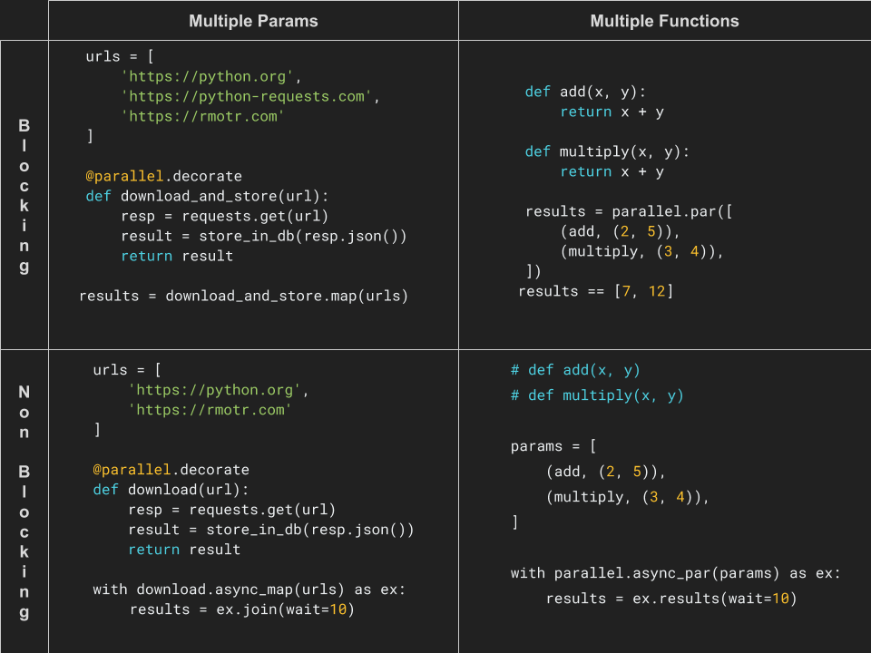

Parallel: Parallelism for Humans¶
Release v0.0.1.
Note
❤️ Feature requests and questions are WELCOME ❤️.
Parallel is in early stage and your input is highly appreciated.
Questions or ideas? Create an issue.
parallel makes the process of writing parallel code simple and enjoyable, bringing parallelism closer to humans. parallel is NOT a pipeline library (check Dask or Luigi for that).
parallel is inspired (and perfectly summarized) by Scala’s parallel collections:
An effort to facilitate parallel programming by sparing users from low-level parallelization details, meanwhile providing them with a familiar and simple high-level abstraction.
The hope was, and still is, that implicit parallelism behind a high-level abstraction will bring reliable parallel execution one step closer to the workflow of mainstream developers.
parallel lets you create instant, parallelizable functions with amazing simplicity:
@parallel.decorate
def download_and_store(url):
resp = requests.get(url)
result = store_in_db(resp.json())
return result
urls = [
'https://python.org',
'https://python-requests.com',
'https://rmotr.com'
]
# instant parallelism (Threads used by default)
results = download_and_store.map(urls, timeout=5, max_workers=4)
Parallel includes a simple way to switch between multithreading and multiprocessing:
# Using the default executor (thread)
# (can be configured when writing the function)
results = download_and_store.map(urls)
# Add `.thread` to use multithreading
results = download_and_store.thread.map(urls)
# Add `.process` to use multiprocessing
results = download_and_store.process.map(urls)
Warning: Multiprocessing support is in alpha stage. I had to rewrite a module similar to concurrent.futures because pickling doesn’t work with decorated functions.
Decorating your function won’t affect its regular behavior. The decorated function can still be used normally:
res = download_and_store('https://rmotr.com')
Existing functions (not decorated), can also be parallelized with the same simplicity:
def download_and_store(url):
# Same function as before, not decorated
pass
results = parallel.map(download_and_store, urls)
Non Blocking API¶
Parallel also includes a non Blocking API, with similar simplicity:
params = {
'python': 'https://python.org',
'RMOTR': 'https://rmotr.org',
}
with download_and_store.async_map(params) as ex:
# do something else here, when ready, ask for results
results = executers.results(timeout=10)
results['python']
Parallelizing Multiple functions¶
Parallel can also be used to run multiple different functions in parallel, with advanced argument passing and a simplified API:
@parallel.decorate
def sum(a, b):
return a + b
@parallel.decorate
def multiply(a, b):
return a * b
@parallel.decorate
def square(a, pretty=False):
return a ** 2
results = parallel.par([
sum.future(2, 2),
multiply.future(3, 4),
square.future(4, pretty=True)
])
results == [4, 12, 25]
Functions that are not decorated can be passed as tuples, or using the
parallel.future helper:
results = parallel.par([
(sum, 2, 2),
(multiply, 3, 4),
(square, 4, {'pretty': True}),
# instead of passing tuples, use `future`s:
parallel.future(sum, 2, 2),
parallel.future(square, 4, pretty=True),
])
results == [4, 12, 25]
There’s far more to Parallel than what we’ve just shown, a few examples:
*args, and **kwargs function arguments (knwon shortcoming of
concurrent.futures)Error handling and recovering
Automatic retries
A non-blocking API
Parallelism with multiprocessing or multithreading
—
Refer to the following quickstart guides:
- Quickstart: Parallelize a function with multiple executions
- The basics
- Running the original function verbatim
- Named executions (using dictionaries)
- Passing multiple parameters
- Passing Named Arguments
- Extras: simplify repeated arguments
- Advanced argument passing
- Other execution options
- Error handling & the Silent mode
- Non Decorated Functions
- A quick note on Python decorators
- The Non-Blocking (async) API
- Quickstart: Run multiple functions in parallel
Quick functionality matrix summary:
